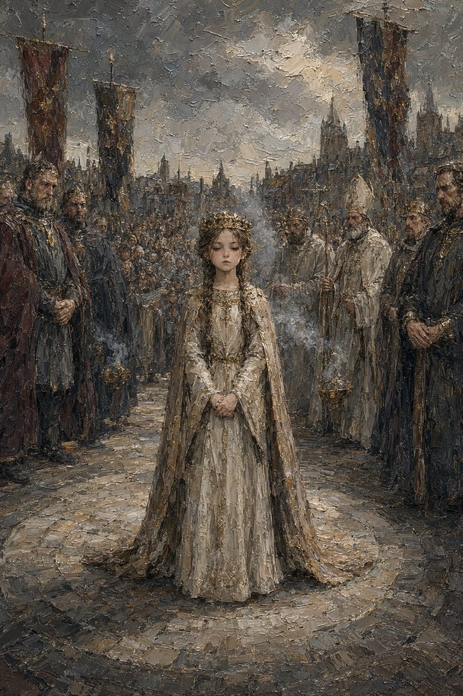

Record 13 of 15
Livia, nine years old, in a circlet of gilded lead washed in vinegar and wine, holds very still on the Round for eleven minutes
A girl in a pale gold-trimmed gown and cloak with a circlet on her braided hair stands alone on a round of paving between rows of robed lords and priests beneath dark banners.